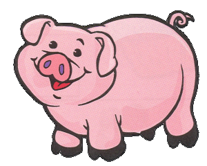

The words pig, hog and swine are all generic terms without regard to gender, size or breed. A male pig is called a boar. A female pig is called a gilt if she hasn't had piglets yet and a sow if she has. Pigs originated from Eurasian Wild boars.
Pigs are very intelligent and learn quickly. They pick up tricks faster than dogs. Pigs rank #4 in animal intelligence behind chimpanzees, dolphins and elephants. Piglets learn their names by two to three weeks of age and respond when called.
Pigs are very social animals. They form close bonds with each other and other species. Pigs enjoy close contact and will lie close together when resting. Pigs use their grunts to communicate with each other.
The meat we get from pigs is pork, ham or bacon. Ham comes from the heavy muscled rear quarters of the pig. Bacon is meat from the back and sides that has been smoked or salted or dried to preserve it. Many sausages are made of pork. Pigs also provide us with leather, brushes made from their hair, and soap made using their fat.
Some kinds of medicines are made from pigs' glands.
Their bones are made into glue.
From: http://www.kidcyber.com.au/topics/farmpiggies.htm
Check out these interesting things:
Created by Vicente Rodriguez
{kind=link}
{kind=link}
{kind=link}